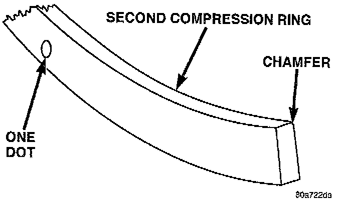
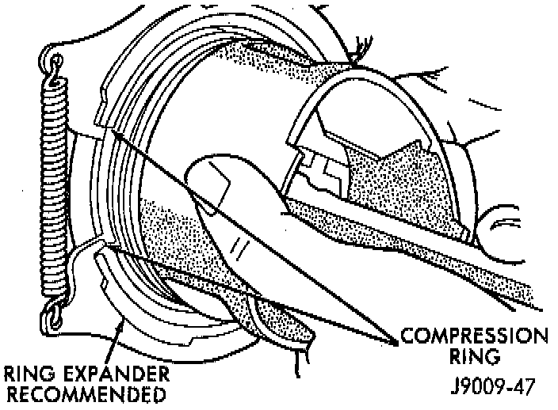
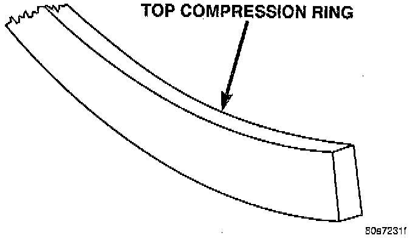
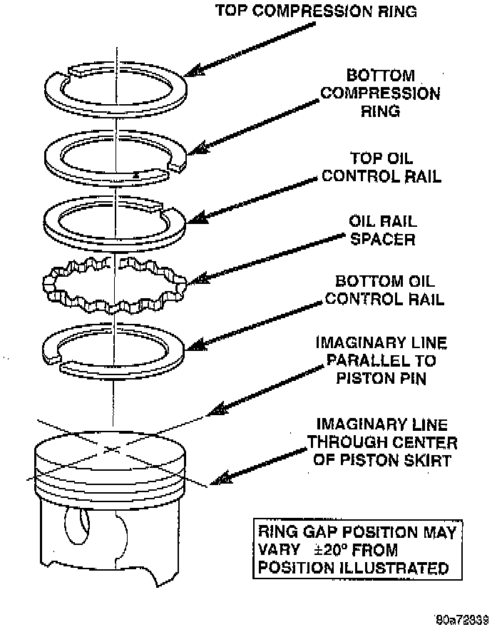

Installation


INSTALLATION
NOTE: The oil control rings are symmetrical, and can be installed with either side up. It is not necessary to use a tool to install the upper and lower rails.
1. Insert oil rail spacer first, then side rails.
NOTE: The two compression rings are different and cannot be interchanged.

2. The top compression ring can be identified by the shiny coating on the outer sealing surface and can be installed with either side up.
3. The second compression ring has a slight chamfer on the bottom of the inside edge and a dot on the top for correct installation.
4. Using a ring installer, install the second compression ring with the dot facing up.
5. Using a ring installer, install the top compression ring (either side up).

RING GAP ORIENTATION
^ Position the gaps on the piston as shown.
^ Oil spacer - Gap on center line of piston skirt.
^ Oil rails - gap 180° apart on centerline of piston pin bore.
^ No. 2 Compression ring - Gap 180° from top oil rail gap.
^ No. 1 Compression ring - Gap 180° from No. 2 compression ring gap.